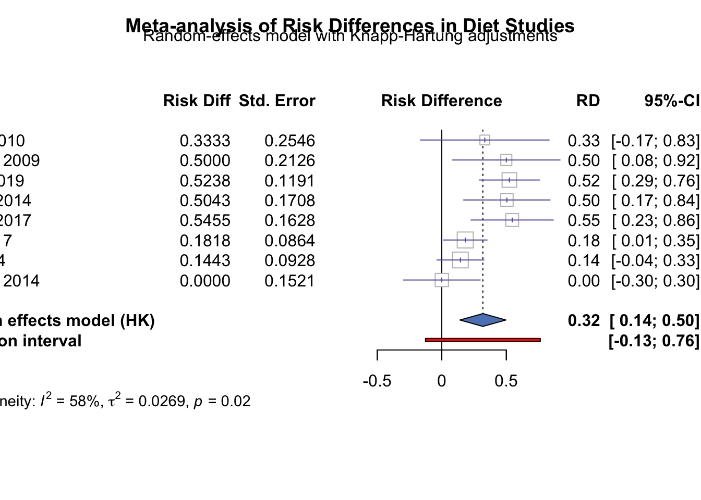

Chapter 4 Plotting meta-analytical results
4.0.1 Overview
This chapter focuses on the visualization of meta-analytical results, which is crucial for effectively communicating findings and insights drawn from aggregated data. Visualization techniques help researchers and stakeholders quickly grasp complex relationships and patterns within the data. In this chapter, we will cover various plotting methods, including forest plots, funnel plots, and advanced visualizations using R packages such as ggplot2, metafor, and dmetar.
4.0.2 Example 1: Forest plot with metafor
dat <- data.frame(author = c("Dyson", "Jönsson", "Morris", "Saslow", "Saslow", "Sato", "Tay", "Yamada"),
year = c(2010, 2009, 2019, 2014, 2017, 2017, 2014, 2014),
ai = c(3, 6, 11, 8, 6, 4, 36, 2), ##Nb event experimental group
n1i = c(6, 6, 21, 9, 11, 22, 46, 12), ## Total experimental group
ci = c(1, 3, 0, 5, 0, 0, 30, 2), ## Nb events control group
n2i = c(6, 6, 12, 13, 8, 27, 47, 12)) ## Total control group
### calculate risk differences and corresponding sampling variances (and use
### the 'slab' argument to store study labels as part of the data frame)
dat <- escalc(measure = "RD", ai = ai, n1i = n1i, ci = ci, n2i = n2i, data = dat,
slab = paste(" ", author, year), addyi = FALSE)
### fit random-effects model (using the DL estimator)
res <- rma(yi, vi, data = dat, method = "DL")
### colors to be used in the plot
colp <- "#6b58a6"
coll <- "#a7a9ac"
### total number of studies
k <- nrow(dat)
### generate point sizes
psize <- weights(res)
psize <- 1.2 + (psize - min(psize)) / (max(psize) - min(psize))
### get the weights and format them as will be used in the forest plot
weights <- round(weights(res), 1)
### adjust the margins
par(mar = c(2.7, 3.2, 2.3, 1.3), mgp = c(3, 0, 0), tcl = 0.15)
### forest plot with extra annotations
sav <- forest(dat$yi, dat$vi, xlim = c(-3.4, 2.1), ylim = c(-0.5, k + 3), alim = c(-1, 1), cex = 0.88,
pch = 18, psize = psize, efac = 0, refline = NA, lty = c(1, 0), xlab = "",
ilab = cbind(paste(dat$ai, "/", dat$n1i), paste(dat$ci, "/", dat$n2i), weights),
ilab.xpos = c(-1.9, -1.3, 1.2), annosym = c(" (", " to ", ")"),
rowadj = -0.07)
### add the vertical reference line at 0
segments(0, -1, 0, k + 1.6, col = coll)
### add the vertical reference line at the pooled estimate
segments(coef(res), 0, coef(res), k, col = colp, lty = "33", lwd = 0.8)
### redraw the CI lines and points in the chosen color
segments(summary(dat)$ci.lb, k:1, summary(dat)$ci.ub, k:1, col = colp, lwd = 1.5)
points(dat$yi, k:1, pch = 18, cex = psize * 1.15, col = "white")
points(dat$yi, k:1, pch = 18, cex = psize, col = colp)
### add the summary polygon
addpoly(res, row = 0, mlab = "Total (95% CI)", efac = 2, col = colp, border = colp)
### add the horizontal line at the top
abline(h = k + 1.6, col = coll)
### redraw the x-axis in the chosen color
axis(side = 1, at = seq(-1, 1, by = 0.5), col = coll, labels = FALSE)
### now we add a bunch of text; since some of the text falls outside of the
### plot region, we set xpd=NA so nothing gets clipped
par(xpd = NA)
### adjust cex as used in the forest plot and use a bold font
par(cex = sav$cex, font = 2)
### add headings
text(sav$xlim[1], k + 2.5, pos = 4, "Study or\nsubgroup")
text(mean(sav$ilab.xpos[1:2]), k + 3.4, "No of events / total")
text(0, k + 2.7, "Risk difference, IV,\nrandom (95% CI)")
text(c(sav$ilab.xpos[3], sav$xlim[2] - 0.35), k + 2.7, c("Weight\n(%)", "Risk difference, IV,\nrandom (95% CI)"))
### add 'Favours control'/'Favours experimental' text below the x-axis
text(c(-1, 1), -2.5, c("Favors control", "Favors experimental"), pos = c(4, 2), offset = -0.3)
### use a non-bold font for the rest of the text
par(cex = sav$cex, font = 1)
### add text with heterogeneity statistics
text(sav$xlim[1], -1, pos = 4, bquote(paste("Test for heterogeneity: ",
tau^2, "=", .(round(res$tau2, digits = 2)), "; ",
I^2, "=", .(round(res$I2, digits = 2)), "%")))
### add text with overall estimate
text(sav$xlim[1], -2.5, pos = 4, bquote(paste("Overall effect: ",
riskdiff == .(round(coef(res), digits = 2)))))
### add titles
text(sav$xlim[1], k + 4.5, pos = 4, "Risk difference between low and very low carbohydrate diets")
4.0.3 Example 2: Forest plot with meta
library(meta)
# Perform meta-analysis using the metagen function from `meta`
# Perform meta-analysis using the metagen function from `meta`
meta_analysis <- metagen(
TE = dat$yi, # Use the calculated effect sizes
seTE = sqrt(dat$vi), # Standard errors
studlab = paste(dat$author, dat$year),
data = dat,
sm = "RD", # Risk Difference as the summary measure
fixed = FALSE, # Using a random-effects model
random = TRUE,
method.tau = "REML", # Restricted maximum likelihood estimator
hakn = TRUE, # Knapp-Hartung adjustment
title = "Risk Difference between Diet Groups"
)
# Create a forest plot with custom options and store the output
forest_plot <- meta::forest(
meta_analysis,
prediction = TRUE, # Add a prediction interval
print.tau2 = TRUE, # Print the tau-squared statistic in the plot
leftlabs = c("Study", "Risk Diff", "Std. Error"), # Custom labels
lab.e = "Favours Low Carb", # Label for experimental group
lab.c = "Favours Control", # Label for control group
col.study = "#6b58a6", # Study point color
col.diamond = "#5e84c0", # Color of the summary diamond
col.square = "white" # Color for individual study estimates
)
library(grid)
grid.text("Meta-analysis of Risk Differences in Diet Studies",
x = 0.5, y = unit(0.95, "npc"),
gp = gpar(fontsize = 14, fontface = "bold"))
grid.text("Random-effects model with Knapp-Hartung adjustments",
x = 0.5, y = unit(0.93, "npc"),
gp = gpar(fontsize = 12))
4.0.4 Example 3: Forest plot with ggplot
# Load necessary libraries
library(ggplot2)
library(dplyr)
library(ggpubr)
library(ggstar)
# Prepare the data: Calculate estimates, confidence intervals, and other metrics
dat <- dat %>%
mutate(
estimate = yi, # Estimated effect size
conf.low = yi - 1.96 * sqrt(vi), # Lower bound of the confidence interval
conf.high = yi + 1.96 * sqrt(vi), # Upper bound of the confidence interval
Sub_Cat_intervention = paste(author, year) # Combine author and year for labels
)
# Create a ggplot forest plot
p <- ggplot(dat, aes(estimate, reorder(Sub_Cat_intervention, estimate))) +
# Add stars for effect sizes
geom_star(starshape = 12, size = 4, starstroke = 1.1, color = "#6b58a6") +
# Add points for individual study estimates
geom_point(aes(size = n1i), shape = 21, alpha = 0.8, fill = "#ff9d02",
position = position_dodge(width = 0.6)) +
# Add error bars using confidence intervals
geom_errorbar(aes(xmin = conf.low, xmax = conf.high), color = "black",
size = 0.2, width = 0.1) +
# Add a vertical line at x = 0
geom_vline(xintercept = 0, linetype = 2, color = "gray") +
# Apply ggpubr theme
theme_pubr() +
# Set x-axis limits
xlim(c(-3.5, 3.5)) + # Adjust limits based on your data
# Remove legend
theme(legend.position = "none") +
# Set axis labels
labs(y = "", x = "Risk Difference (RD)")
# Display the plot
print(p)4.0.5 Example 4: Orchard plots
# Load required libraries
library(ggplot2)
library(dplyr)
library(metafor)
library(ggbeeswarm)
# Create a larger randomized dataset with valid constraints
set.seed(42) # For reproducibility
n_studies <- 30 # Total number of studies
dat <- data.frame(
author = paste("Study", 1:n_studies),
year = sample(2000:2020, n_studies, replace = TRUE),
n1i = sample(10:100, n_studies, replace = TRUE), # Total in experimental group
n2i = sample(10:100, n_studies, replace = TRUE) # Total in control group
)
# Randomly generate events ensuring that events do not exceed group sizes
dat$ai <- sapply(1:n_studies, function(i) sample(0:dat$n1i[i], 1)) # Events in experimental group
dat$ci <- sapply(1:n_studies, function(i) sample(0:dat$n2i[i], 1)) # Events in control group
# Calculate risk differences
dat <- escalc(measure = "RD", ai = ai, n1i = n1i, ci = ci, n2i = n2i, data = dat)
# Fit a random-effects model and create a subgroup variable
dat$subgroup <- sample(c("Group A", "Group B", "Group C"), n_studies, replace = TRUE)
# Create an empty plot list to store individual subgroup plots
plot_list <- list()
# Loop over each subgroup to create the overall mean for each
for (group in unique(dat$subgroup)) {
subgroup_data <- dat[dat$subgroup == group, ]
res <- rma(yi, vi, data = subgroup_data, method = "DL") # Fit model for subgroup
# Create the orchard plot for each subgroup
p <- ggplot(subgroup_data, aes(x = yi, y = 1)) +
geom_violin(fill = "lightgray", alpha = 0.5) +
geom_quasirandom(aes(size = 1/sqrt(vi)), alpha = 0.7) + # Use inverse of SE for size
geom_point(aes(x = res$b, y = 1, color = "Overall Mean"), size = 5, shape = 18) +
geom_errorbarh(aes(xmin = res$ci.lb, xmax = res$ci.ub, y = 1), height = 0.1, color = "red") +
labs(x = "Risk Difference", y = "", title = paste("Orchard Plot for", group)) +
scale_color_manual(name = "", values = c("Overall Mean" = "red")) +
theme_minimal() +
theme(axis.text.y = element_blank(), axis.ticks.y = element_blank()) +
xlim(c(-1, 1)) +
scale_size(range = c(2, 5), name = "Precision")
# Store the plot in the list
plot_list[[group]] <- p
}
# Display all orchard plots for each subgroup
library(gridExtra)
do.call(grid.arrange, c(plot_list, ncol = 1)) # Arrange plots in a single column